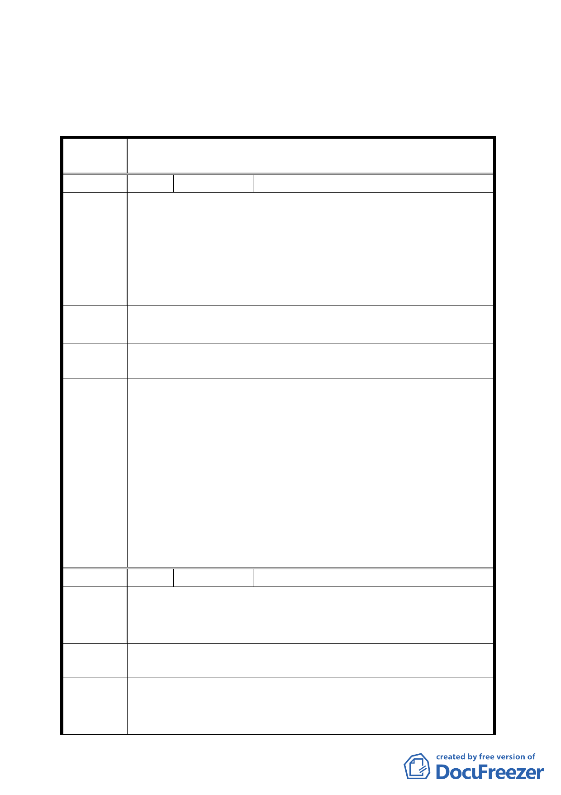

農田水利會所提意見，納入該會所有信義區逸仙段二小段
35-1地號整筆土地。
四、 公民或團體陳情意見審決如後附綜理表。
臺北市都市計畫委員會公民或團體所提意見綜理表
案
名
變更臺北文化體育園區北側第三種工業區為道路用地
細部計畫案
編 號1
陳情人 臺北市瑠公農田水利會
經查閱本案計畫書並電洽申請單位（臺北市政府教育局）
，表示本會所有旨述地號土地面積計 442 平方公尺，其中部分
陳情理由 變更為道路用地，面積計約 414 平方公尺，未來預計以協議價
購或徵收方式辦理用地取得；唯殘（剩）於部分僅約 28 平方公
尺，因坵形畸零面積狹小，未達經濟使用規模且有礙都市計畫
發展，建議考量一併納入變更為道路用地。
建議辦法 惠請就本會所有信義區逸仙段二小段35-1地號土地，整筆（面
積442平方公尺）納入變更道路用地範圍內，俾保障本會權益。
專案小組
審查結論
併建議方案處理，提大會審議。
1.因應未來文化體育園區整體開發計畫之交通規劃，本案維持
公展計畫書變更第三種工業區為道路用地的範圍，即案內除
專案小組結論同意變更之東西向道路外，往北連通市民大道
部分亦同意變更第三種工業區為道路用地；惟往北連通之道
委員會決 路用地部分，未來得視台鐵臺北機場開發計畫內容彈性調整。
議 2.案內東西向道路維持專案小組結論東側不予連通忠孝東路四
段553巷。
3.本案變更為道路用地範圍為避免畸零地產生，依臺北市瑠公
農田水利會所提意見，納入該會所有信義區逸仙段二小段
35-1地號整筆土地。
編 號2
陳情人 交通部高速鐵路工程局
本案與本局相關為信義區逸仙段二小段 33-7 地號，該筆土
陳情理由 地係本局與台灣鐵路管理局共同持分管有之國有土地各持有 2
分之 1，係供高鐵路線以地下隧道興建營運使用。
建議辦法
建請變更土地使用分區為「鐵路用地兼做道路使用」，以符實
際。
專案小組
審查結論
1.同意本案文化體育園區連通光復北路之北側道路都市計畫變
更。
2.本案公展計畫圖北側道路連通忠孝東路四段 553 巷之虛線刪
-9-